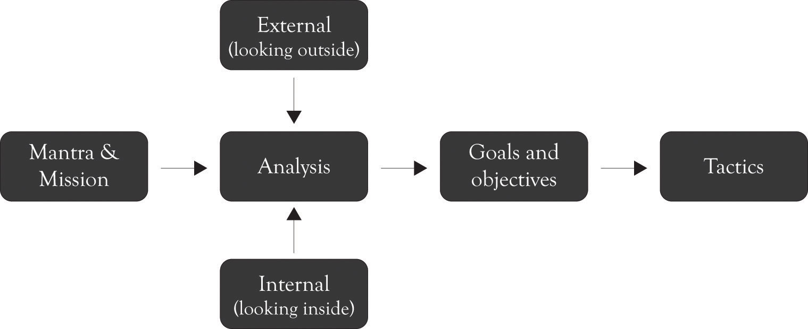
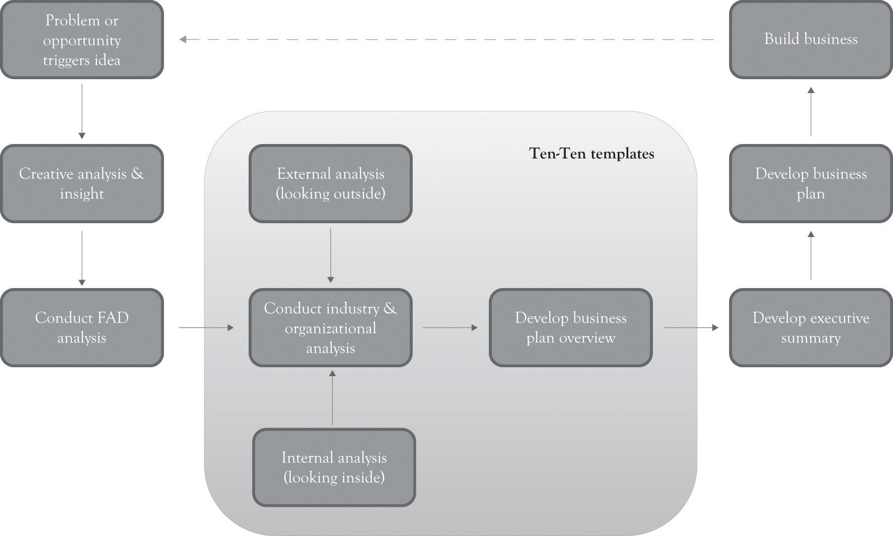

As noted in the last chapter, the planning process is never-ending because of the ongoing pressure in the marketplace. There is no single plan that can deal with the complexity of monopolistic competition. The first mantra of the entrepreneur is: differentiate through innovation or perish, and this is accomplished by focusing on Midas versions of products using extravagant engineering. The second mantra of the entrepreneur is: strive to reduce costs, and this is accomplished by focusing on Hermes versions of products using frugal engineering and design. The dynamic tension between delivering Midas and Hermes versions will also lead to mainstream Atlas products. A continuous process for developing business plans is necessary for competing and surviving under monopolistic competition. As discussed in the last chapter, the strategic planning process can be modeled using the diagram in Figure 9.1 "Strategic Planning Process". The mantra and mission are constantly evaluated and revisited throughout the life of the firm.
Figure 9.1 Strategic Planning Process
The Ten–Ten planning processOnce you have gathered some background data related to the industry and organization, you should be able to complete an Organizational and Industry Analysis template and a Business Plan Overview template in about 20 minutes. contains two templates: an Organizational and Industry Analysis template and the Business Plan Overview template that identifies the mantra, mission, money, goals, objectives, and tactics in a very brief format. (These templates can be downloaded from http://glsanders.wordpress.com/) The idea behind the Ten–Ten approach is that once you have gathered some background data related to the industry and the organization, you should be able to complete the two templates in about 20 minutes.See Horan (2007). This is an alternative approach to Horan’s approach developing a brief plan. One deficiency of the Horan approach is that it does not integrate the key ideas found in the major planning approaches. The deficiency in all of the other planning approaches discussed in Chapter 8 "Strategic Planning and Ten–Ten Planning" is they take too much time and, yet, they are not comprehensive enough because they do not include and build on other approaches. The Ten–Ten approach attempts to reconcile speed with comprehensiveness. This will of course be a very rough first-cut, but it will be the foundation for developing more refined plans. The Ten–Ten process is meant to be quick and to the point, but it can be expanded to 10 hours, 10 days, or in some instances 10 weeks, but rarely more than that. These templates along with the FAD (features, attributes, and design) template can be used to develop the executive summary. This in turn can be used to develop a full-blown business plan, which is the foundation for building the business. Figure 9.2 "The Business Development Process" illustrates the entire Ten–Ten process from conceptualizing the business idea through building the business.
Figure 9.2 The Business Development Process
